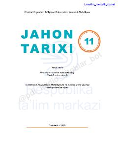

JT11-sinf o'quvchilari uchun mo'ljallangan jahon tarixi fanidan rasmiy darslik.
Ushbu darslik umumiy o'rta ta'lim maktablarining 11-sinf o'quvchilari uchun mo'ljallangan bo'lib, jahon tarixi fanidan o'quv dasturiga moslashtirilgan. Kitobda tarixiy jarayonlar, muhim voqealar va sivilizatsiyalar rivoji tizimli ravishda yoritilgan.